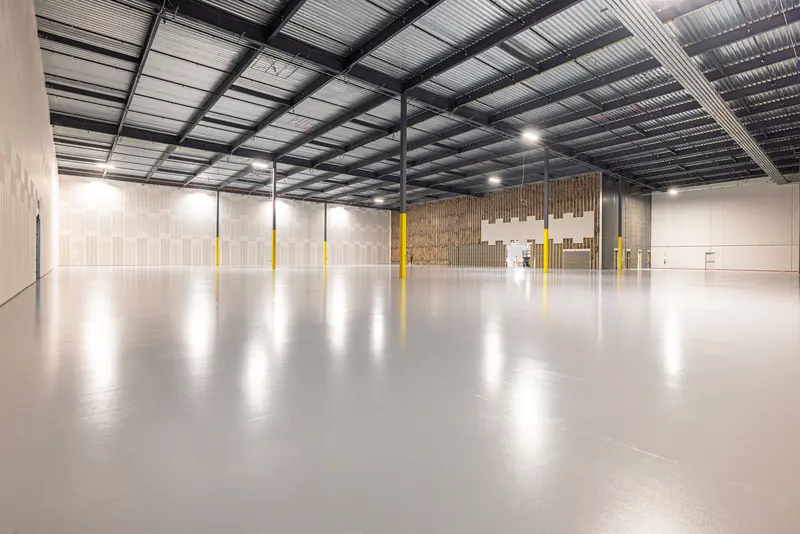

Resíduo acumulado nas juntas: o ponto que reprova o piso em auditoria
Junta e canto vivo são frestas. Numa auditoria de higiene, é por elas que o exame começa.

Quem já acompanhou uma auditoria de higiene conhece a cena: o auditor se agacha, passa a mão na junta entre as placas e no encontro do piso com a parede. Não é implicância. Esses dois pontos concentram o risco que o resto da área não tem.
Por que a junta é o ponto crítico
Uma junta é uma fresta estreita e funda. A escova alcança a borda, não o fundo; a água entra e demora a sair. O que fica ali é matéria orgânica em ambiente úmido e protegido, exatamente a condição que a limpeza deveria eliminar.
A orientação técnica para áreas de alimento é consistente nesse ponto: superfície contínua e impermeável, porque emenda, junta e linha de rejunte são lugares onde microrganismo se instala. Em piso de placa, a quantidade de metros lineares de junta por metro quadrado de área dá a dimensão do problema.
O canto vivo entre piso e parede
O encontro em ângulo reto entre piso e parede tem a mesma lógica: a lavagem empurra o resíduo para o canto e ele fica onde a escova não encosta. É por isso que a recomendação para área de processo é substituir o ângulo por uma curva: o rodapé em meia-cana.
A curva faz duas coisas ao mesmo tempo: não acumula, e permite que a limpeza percorra piso e rodapé num movimento contínuo, sem mudança de ferramenta. Por isso canto arredondado ou vedado entre piso e parede é item recorrente nas especificações de área de manipulação de alimento.
O que o piso contínuo muda
Um sistema autonivelante é aplicado como camada única: não existe placa, rejunte nem fresta. A superfície fechada é limpa pela própria passagem da água, e o rodapé em meia-cana elimina o canto.
Vale dizer o que isso não resolve. Piso contínuo não substitui procedimento de limpeza, não corrige caimento mal executado e não compensa ralo mal posicionado. Ele retira do jogo uma classe específica de apontamento: a que vem de fresta.
Antes da próxima auditoria
- Quantos metros lineares de junta existem na área de processo?
- O encontro entre piso e parede é canto vivo ou curva?
- Os apontamentos anteriores sobre piso citavam junta, canto ou superfície?
- A área seca e a área úmida têm o mesmo tipo de acabamento?
O histórico de apontamentos é o melhor indicador: se junta e canto se repetem de auditoria em auditoria, o problema é de geometria do piso, não de frequência de limpeza.
A prova
Aprovado na auditoria seguinte, sem apontamento referente ao piso
Indústria farmacêutica em Hortolândia/SP
O cliente havia sido reprovado em auditoria por acúmulo de resíduo nas juntas do piso. Executado autonivelante sem juntas em 1.800 m² com rodapé em meia-cana. O cliente foi aprovado na auditoria seguinte sem apontamento referente ao piso.
Veja também
- Epóxi autonivelante Para ambientes que exigem limpeza e têm tráfego leve a médio.
- Por que o piso descola depois da lavagem com água quente O descolamento em área de lavagem quente raramente é falha de aplicação: é diferença de dilatação entre o revestimento e o concreto.
- Piso escorregadio onde há água, gordura ou óleo Piso liso é seguro enquanto está seco. Onde há filme de líquido permanente, a textura é que decide.